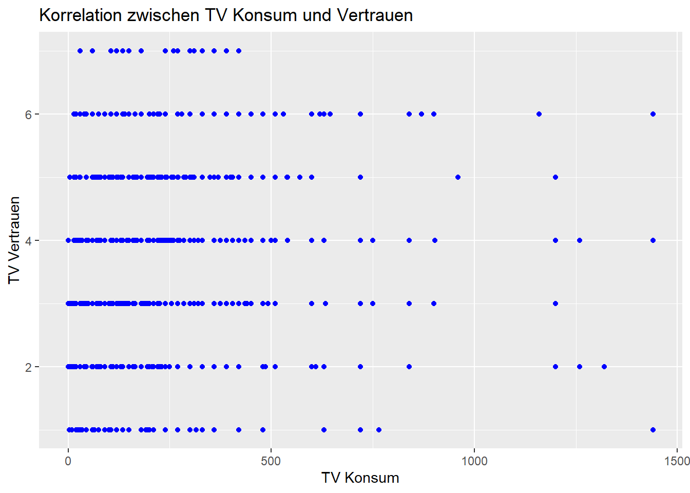
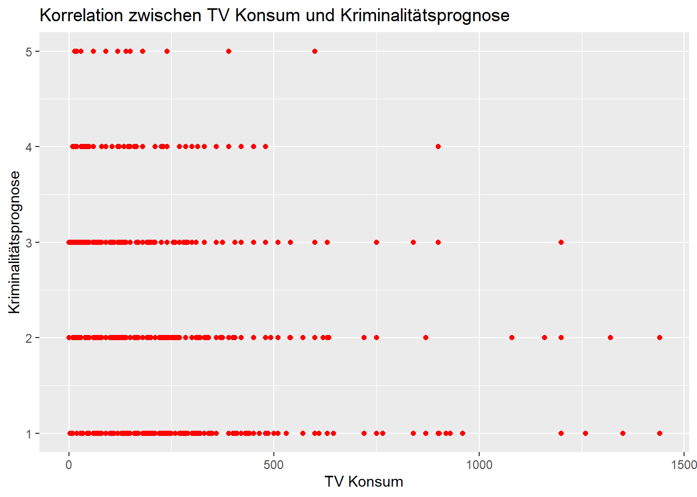
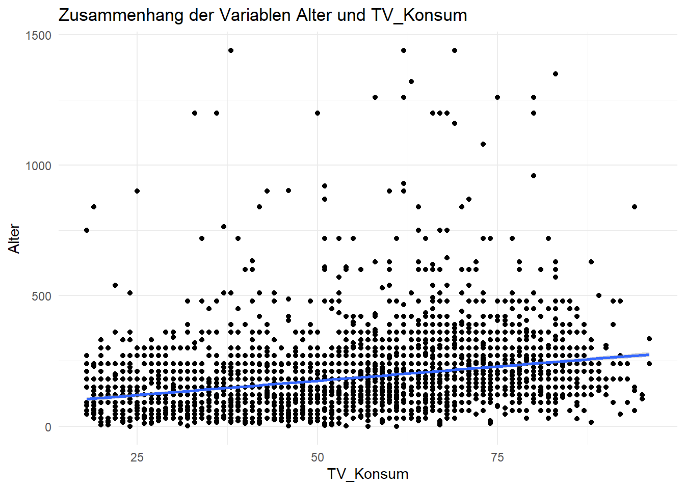
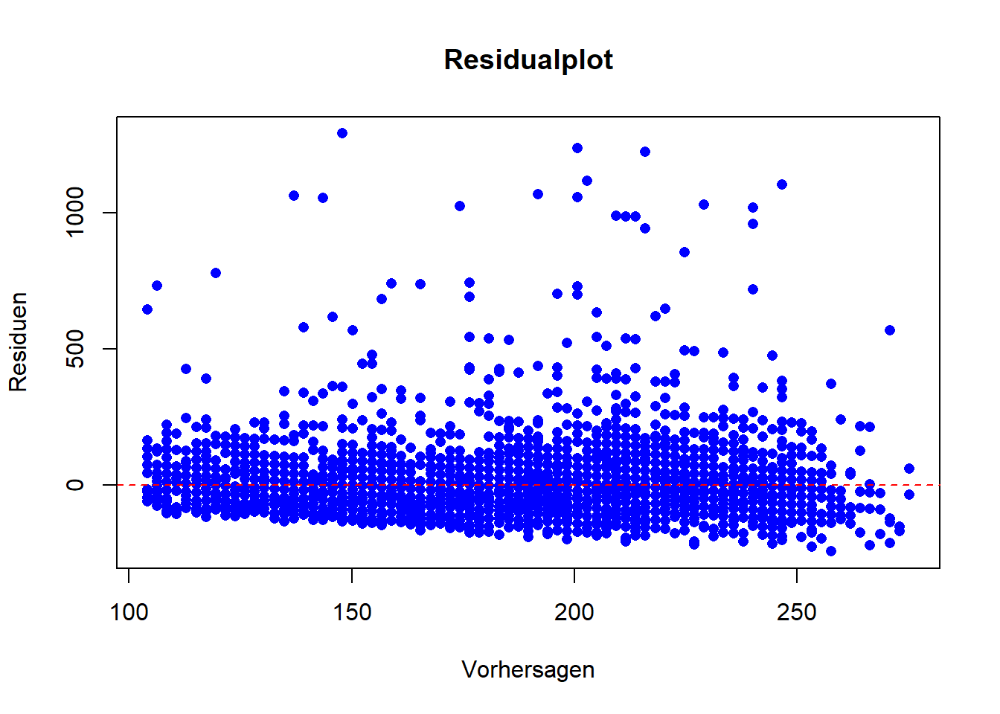

Einführung in die Analyse von Zusammenhängen zwischen Variablen - Teil 2: Korrelation & Regression
Author
Stephanie Geise
1 Die Analyse von Zusammenhängen bei zwei metrischen Variablen
Zur Analyse von Zusammenhängen bei zwei metrischen Variablen gibt es verschiedene statistische Verfahren. In diesem Teilkapitel schauen wir uns die Korrelationsanalyse sowie die einfache lineare Regression an.
GRAFIK
2 Die Korrelationsanalyse: Analyselogik, Ziel und Einsatzgebiete
Die Korrelationsanalyse ist eine schnelle und einfache statistische Methode, um den Zusammenhang zwischen zwei oder mehr metrischen Variablen zu untersuchen. Ziel der Korrelationsanalyse ist, die Richtung (positiv oder negativ) und die Stärke eines linearen Zusammenhangs zwischen den Variablen zu bestimmen. Als statistischer Kennwert wird ein Korrelationskoeffizient, zum Beispiel der Pearson-Korrelationskoeffizient (auch Pearson’s r) ermittelt. Der Korrelationskoeffizient gibt an, wie sehr die Werte einer Variable mit den Werten einer anderen Variable zusammenhängen, d.h. korrelieren. Er nimmt Werte zwischen -1 und 1 an. Ein hoher Korrelationskoeffizient (nahe 1 oder -1) deutet auf einen starken Zusammenhang hin, während ein niedriger Koeffizient (nahe 0) auf einen schwachen oder keinen Zusammenhang hindeutet. Zudem deutet ein positiver Korrelationskoeffizient auf einen positiven Zusammenhang hin, während ein negativer Koeffizient auf einen negativen Zusammenhang verweist.
Der Zusammenhang zwischen den untersuchten Variablen wird dabei analysiert, ohne dass eine Richtung spezifiziert wird - es muss also nicht die eine Variable als unabhängig, und die andere als abhängige Variable festgelegt werden. Die Korrelationsanalyse kann vielfältig eingesetzt werden. Sie ist allerdings etwas empfindlich gegenüber Ausreißern und setzt einen linearen Zusammenhang voraus.
Vorsicht! Lassen Sie sich nicht verwirren: Der Pearson-Korrelationskoeffizient und die Rangkorrelation nach Pearson sind unterschiedliche Kennwerte, die nur ähnlich klingen. Der Pearson-Korrelationskoeffizient misst den linearen Zusammenhang zwischen den tatsächlichen Messwerten, während die Rangkorrelation nach Pearson (auch als Spearman-Korrelationskoeffizient bezeichnet) den monotonen Zusammenhang zwischen den Rängen der Daten untersucht. Daher ist die Rangkorrelation besser geeignet, wenn der Zusammenhang nicht-linear ist oder wenn Ausreißer in den Daten vorhanden sind. Nun soll es aber um die Analyse eines linearen Zusammenhangs zwischen zwei metrischen Variablen gehen. Dazu widmen wir uns nun der Korrelationsanalyse mittels Pearson-Korrelationskoeffizient.
3 Die Analyse von Zusammenhängen bei zwei metrischen Variablen mit Hilfe der Korrelationsanalyse
Mit dieser Methode wollen wir untersuchen, ob es einen Zusammenhang zwischen der metrischen Variable tägliche Fernsehnutzung in Minuten (lm02) sowie der quasi-metrischen Variable Vertrauen ins Fernsehen (pt09) gibt. Wir vermuten, dass es einen positiven Zusammenhang gibt: Wer ein höheres Vertrauen in das Fernsehen hat, schaut auch mehr fern.
Um das zu prüfen, müssen wir zunächst wieder unsere Pakete und Allbus-Daten laden und aufbereiten. Los geht’s!
Dann erzeugen wir einen neuen Teildatensatz, benennen die benötigten Variablen in “TV_Konsum” und “TV_Vertrauen” um und selektieren die fehlende Werte (z.B. -9=Keine Angabe) mittels Filter-Funktion.
5 Erzeugen eines Teildatensatzes, Umbenennen der Variablen und Filtern der Fälle
Nun berechnen wir, ob eine Korrelation zwischen beiden Variablen vorliegt. Dazu nutzen wir die Funktion cor(). Mit dem print-Befehl geben wir uns den Wert aus:
korrelation <- daten_neu %>%summarize(correlation =cor(TV_Konsum, TV_Vertrauen, use ="complete.obs"))print(korrelation)
# A tibble: 1 × 1
correlation
<dbl>
1 0.114
Schauen wir uns den (sehr übersichtlichen) Output an: Wie erhalten einen Korrelationskoeffizient von 0,113903. Das bedeutet, dass zwischen den beiden Variablen TV_Konsum und TV_Vertrauen ein schwacher positiver linearer Zusammenhang besteht. Höhere Werte in einer Variable gehen also tendenziell mit höheren Werten in der anderen Variable einher. Jedoch ist die Korrelation relativ niedrig, was darauf hindeutet, dass der Zusammenhang zwischen den beiden Variablen nicht besonders stark ist.
Um die Korrelation zwischen den Variablen “TV_Konsum” und “TV_Vertrauen” zu visualisieren, können wir mit dem ggplot2-Paket ein Scatterplot erstellen:
6 Visualisierung der Korrelation mit Hilfe eines Scatterplots
scatterplot <-ggplot(daten_neu, aes(x = TV_Konsum, y = TV_Vertrauen)) +geom_point(color ="blue") +labs(x ="TV Konsum", y ="TV Vertrauen", title ="Korrelation zwischen TV Konsum und Vertrauen")print(scatterplot)

Hier können wir den oben bereits ermittelten Befund noch einmal grafisch inspizieren. Der leichte positive Zusammenhang zwischen dem Vertrauen in die Insitution Fernsehen und der täglichen Fernsehnutzung zeigt sich ganz schön.
Führen Sie zur Übung nun noch eine Korrelationsanalyse durch, um den Zusammenhang zwischen der täglichen Fernsehnutzung in Minuten (umbenannt in “TV_Konsum”) und der quasi-metrisch gemessenen Einschätzung, ob die Entwicklung der Kriminalität in Deutschland zu- oder abgenommen hat (cf03; 1=hat stark zugenommen; 5=hat stark abgenommen). Entsprechend der Kultivierungsforschung können wir vermuten, dass es einen negativen Zusammenhang geben sollte: Mehr Fernsehkonsum sollte mit einer negativen Kriminalitätsprognose korrelieren. Dazu müssen Sie zuerst wieder einen Teildatensatz mit den benötigten Variablen erzeugen, diese ggf. umbennen und filtern. Dann ermitteln Sie die Korrelation beider Variablen.
7 Erzeugen eines Teildatensatzes, Umbenennen der Variablen und Filtern der Fälle
Nun berechnen wir, ob eine Korrelation zwischen beiden Variablen vorliegt. Dazu nutzen wir die Funktion cor(). Mit dem print-Befehl geben wir uns den Wert aus:
8 Berechnung und Ausgabe des Korrelationskoeffizienten
korrelation <- daten_neu2 %>%summarize(correlation =cor(TV_Konsum, Kriminalitätsprognose, use ="complete.obs"))print(korrelation)
# A tibble: 1 × 1
correlation
<dbl>
1 -0.196
Betrachten wir den Output: Der Korrelationskoeffizient von -0,196 deutet auf einen schwachen negativen linearen Zusammenhang zwischen der “täglichen Fernsehnutzung in Minuten” und der Einschätzung zur Entwicklung der Kriminalität in Deutschland hin.
ACHTUNG! Zur Interpretation müssen Sie nun aber auch berücksichtigen, wie die Werte der Variable gelabelt sind: Ein höherer Wert bedeutet, dass man eine Abnahme der Kriminalitätsentwicklung vermutet (1=hat stark zugenommen; 5=hat stark abgenommen). Der negative Korrelationskoeffizient bedeutet dann, dass höhere Werte in der “täglichen Fernsehnutzung in Minuten” tendenziell mit niedrigeren Werten in der Einschätzung zur Kriminalitätsentwicklung korrelieren. Oder anders gesagt: Personen, die mehr Fernsehen schauen, tendieren eher zur Annahme, dass die Kriminalität in Deutschland weniger zugenommen oder sogar abgenommen hat.
So oder so ist zu beachten, dass der Korrelationskoeffizient nur den linearen Zusammenhang erfasst und keine Aussagen zur Kausalitäten des Zusammenhangs macht. Korrelation ist nicht Kausalität!
Zur grafischen Illustration erstellen wir nun wieder ein Scatterplot:
9 Visualisierung der Korrelation mit Hilfe eines Scatterplots
scatterplot <-ggplot(daten_neu2, aes(x = TV_Konsum, y = Kriminalitätsprognose)) +geom_point(color ="red") +labs(x ="TV Konsum", y ="Kriminalitätsprognose", title ="Korrelation zwischen TV Konsum und Kriminalitätsprognose")print(scatterplot)

10 Die Regressionsanalyse: Analyselogik, Ziel und Einsatzgebiete
Picture generated by Midjourney
Die lineare Regression untersucht den Zusammenhang zwischen einer abhängigen Variable und mindestens einer unabhängigen Variable. Sie versucht, eine mathematische Beziehung zwischen den Variablen zu modellieren, die durch eine Linie (in einfachen linearen Regressionen) oder eine Ebene (in multiplen linearen Regressionen) repräsentiert wird. Die dahinterliegende “mathematische Idee” der linearen Regression besteht darin, die bestmögliche Anpassung der Daten an das Modell zu erreichen, um die Vorhersage der abhängigen Variable basierend auf den unabhängigen Variablen zu ermöglichen. Dazu wird ein Regressionskoeffizient für jede unabhängige Variable geschätzt, um ihren Einfluss auf die abhängige Variable zu quantifizieren.
Ziel der Regressionsanalyse ist es also, die Beziehung zwischen einer abhängigen Variable (auch erklärte Variable, Regressand oder Prognosevariable genannt) und einer oder mehreren unabhängigen Variablen (oft auch erklärende Variable, Regressor oder Prädiktorvariable) zu analysieren, um Zusammenhänge quantitativ zu beschreiben und zu erklären und/oder Werte der abhängigen Variable mit Hilfe der unabhängige Variable (des Prädiktors) zu prognostizieren. Mit Hilfe der Regressionsanalyse können drei Arten von Fragestellungen untersucht werden: 1) Ursachenanalyse: Gibt es einen Zusammenhang zwischen der unabhängigen und der abhängigen Variable? Wie stark ist dieser? 2) Wirkungsanalyse: Wie verändert sich die abhängige Variable bei einer Änderung der unabhängigen Variablen? 3) Prognose: Können die Messwerte der abhängigen Variable durch die Werte der unabhängigen Variable vorhergesagt werden?
11 Die Einfache lineare Regression:
Die einfache lineare Regression wird angewandt, wenn geprüft werden soll, ob ein (als linear vermuteter) Zusammenhang zwischen einer abhängigen metrischen Variable und einer unabhängigen metrischen Variable besteht. Da sie zwei metrische Variablen integriert, wird sie auch als bivariate Regression bezeichnet. In diesem Teilkapitel lernen wir die einfache lineare Regression auf Grundlage der Allbus-Daten kennen. In der nächsten Sitzung gehen wir dann näher auf die notwendige Prüfung der Voraussetzungen einer Regressionsanalyse ein und lernen auch noch die multiple lineare Regression kennen.
Um die Durchführung der linearen Regression an einem Beispiel nachzuvollziehen, stellen wir zunächst eine gerichtete Hypothese auf, die den Einfluss einer unabhängigen metrischen Variable auf eine abhängige metrische Variable spezifiziert. Hierzu schauen wir uns den Zusammenhang zwischen dem Alter (age) sowie der täglichen Fernsehnutzung in Minuten (lm02) an. Dazu vermuten wir: Das Alter erklärt die Intensität der täglichen Fernsehnutzung in Minuten.
Grafik: Kann das Alter die Fernsehnutzung erklären? (Picture generated by midjourney)
11.0.1 Vorbereitung und Laden der Daten
Wie immer besteht der erste Schritt nun darin, die benötigten Pakete sowie den Datensatz zu laden. Für die lineare Regression kommen zwei neue Pakete hinzu: Wir laden das Paket broom, um die normale Ausgabe der Funktion lm (für die Berechnung linearer Modelle) in ein etwas anschaulicheres Format umwandeln zu können sowie das Paket performance, dass uns später zusätzlich einige Indikatoren ausgibt. Das Paket “see” kommt außerdem dazu, weil es uns eine toolbox für die Visualisierung der Zusammenhänge bereitstellt.
12 Laden der benötigten Pakete
library(dplyr)library(tidyverse)library(broom)
Warning: Paket 'broom' wurde unter R Version 4.3.1 erstellt
library(lm.beta)
Warning: Paket 'lm.beta' wurde unter R Version 4.3.1 erstellt
library(performance)
Warning: Paket 'performance' wurde unter R Version 4.3.1 erstellt
library(see)
Warning: Paket 'see' wurde unter R Version 4.3.1 erstellt
14 Erzeugen eines Teildatensatzes & Umbenennen der Variablen
Für den Teildatensatz bennenen wir die Variablen lm02 und age um und filtern die missings heraus (z.B. -9=Keine Angabe):
daten <- daten %>%rename(Alter = age)%>%rename(TV_Konsum = lm02)%>%filter(between(Alter, 18, 100))%>%filter(between(TV_Konsum, 0, 1500))#Visualisierungshintergrund der Grafiken in ggplot festlegentheme_set(theme_minimal())# Anzeige der p-Werte als Zahlen mit Nachkommastellen einstellenoptions(scipen =999)
14.0.1 Ziel der Analyse
Mit Hilfe der Regression wollen wir nun die oben formulierte Annahme prüfen, dass das Alter die täglichen Fernsehnutzung in Minuten (umbenannt in TV_Konsum) erklären kann. Beides sind metrische Variablen und erfüllen damit die Voraussetzung, dass eine Regression gerechnet werden kann. (Achtung: auch kategorische Variablen können bei der Regressionsanalyse grundsätzlich eingesetzt werden, sie müssen dann aber durch Dummy-Coding passend gemacht werden, dazu aber später mehr).
Bevor wir die Regressionsanalyse durchführen, verschaffen wir uns zunächst einmal einen Überblick über die Daten - dazu visualisieren wir den Zusammenhang zwischen dem Alter sowie der täglichen Fernsehnutzung. Mit Hilfe der Grafik können wir auch die erste Voraussetzung prüfen, nämlich dass es einen linearen Zusammenhang zwischen beiden Variablen gibt.
14.0.2 Prüfung der Voraussetzungen 1: Grafische Darstellung des Zusammenhangs der beiden Variablen, um die Annahme von Linearität zu prüfen
ACHTUNG! Für die Regressionsanalyse müssen noch weitere Voraussetzungen geprüft werden (insb. Homoskedastizität der Residuen; Unabhängigkeit der Residuen; Normalverteilung der Residuen; keine Ausreißer in den Daten). An dieser Stelle klammern wir die anderen Voraussetzungsprüfungen aber vorerst aus, und kommen in der nächsten Sitzung darauf zurück (das ist sonst zu viel auf einmal).
Zur visuellen Inspektion, ob der Zusammenhang zwischen unseren beiden Variablen linear ist, erstellen wir nun mit dem Befehl geom_point ein Punktdiagramm mit den Variablen Alter und TV_Konsum. Praktischerweise ist die Regressionsformel schon in ggplot integriert: Der Befehl geom_smooth erzeugt eine Trendlinie nach dem linear model (method = lm), die die Beziehung von y (=Alter) und x (=TV_Konsum) abbildet. Das Ergebnis ist eine Linie nach einer linearen Gleichung, die den Daten so eng wie möglich folgt. Mit dem Befehl ggtitle legen wir dann noch in den Klammern den Titel der Grafik fest, und mit xlab und ylab ergänzen wir die Achsenbeschriftung.
15 Visualisierung des Zusammenhangs mit Hilfe eines Streudiagramms
ggplot(daten, aes(Alter, TV_Konsum)) +geom_point() +geom_smooth(method = lm, formula ="y ~ x") +ggtitle("Zusammenhang der Variablen Alter und TV_Konsum") +xlab("TV_Konsum") +ylab("Alter")

15.1 Interpretation: Was sehen wir im Streudiagramm?
Die grafische Darstellung legt uns einen positiven und linearen Zusammenhang zwischen Alter und Fernsehnutzung nahe: mit zunehmendem Alter steigt die Nutzungsdauer. Damit scheint eine wichtige Voraussetzung der Regressionsanalyse, dass der Zusammenhang an sich linear ist, erfüllt.
15.2 Durchführung der einfachen linearen Regression über die Funktion lm
Ob diese Beobachtung auch statistisch belastbar ist, wollen wir jetzt mit der einfachen linearen Regression prüfen. Dazu nutzen wir die Funktion lm(). Die Funktion lm steht für “linear model”. In den Klammern benennen wir zunächst die abhängige Variable (hier: TV_Konsum), dann kommt eine Tilde (d.h. “wird definiert durch”) und der Bezug auf unsere unabhängige Variable (hier: Alter). Die Schreibweise y ~ x ist die Formel-Schreibweise in R; in diesem Fall besagt sie, dass y (TV_Konsum) abhängig von x (Alter) ist. Nach dem Komma folgt dann die Benennung des Datensatzes auf den die lm-Funktion angewendet werden soll. Zum Schluss lassen wir uns das Modell ausgeben.
Der Modelloutput von lm ähnelt dem der schon behandelten Hypothesentests; enthält aber noch weitere Eckdaten wie die Effektstärke, das Signifikanzniveau oder die Erklärungsstärke des Modells.
15.2.1 Einfache lineare Regression mit lm (=linear models)
model <-lm(TV_Konsum ~ Alter, data = daten) print(model)
Call:
lm(formula = TV_Konsum ~ Alter, data = daten)
Coefficients:
(Intercept) Alter
64.644 2.193
Da dieser Output sehr, sehr sparsam und für uns noch wenig aussagekräftig ist, ergänzen wir ihn nun mit dem bekannten summary-Befehl, den wir auf unser Modell anwenden. Die dann erscheinende Ausgabe ist das “Herzstück” unserer Regressionsanalyse (insbesondere, wenn sie um die standardisierten B-Koeffizienten erweitert wird - dazu kommen wir aber unten noch). Jetzt nutzen wir erst einmal die summary-Funktion, und wir erhalten im Output einen guten Überblick über unser Regressionsmodell:
summary(model)
Call:
lm(formula = TV_Konsum ~ Alter, data = daten)
Residuals:
Min 1Q Median 3Q Max
-242.61 -67.44 -22.09 35.02 1292.03
Coefficients:
Estimate Std. Error t value Pr(>|t|)
(Intercept) 64.6438 5.6890 11.36 <0.0000000000000002 ***
Alter 2.1928 0.1007 21.77 <0.0000000000000002 ***
---
Signif. codes: 0 '***' 0.001 '**' 0.01 '*' 0.05 '.' 0.1 ' ' 1
Residual standard error: 122.5 on 4927 degrees of freedom
Multiple R-squared: 0.08778, Adjusted R-squared: 0.0876
F-statistic: 474.1 on 1 and 4927 DF, p-value: < 0.00000000000000022
15.3 Interpretation des Outputs: Was sehen wir in der Ausgabe?
Unter Call wird zunächst noch einmal das Regresssionsmodell beschrieben, das wir hier berechnet haben. In diesem versuchen wir auf Basis des Datensatzes “daten” die abhängige Variable “TV_Konsum” durch die unabhängige Variable “Alter” zu erklären.
Unter Resdiuen erhalten wir Informationen zur Verteilung der Residuen. Diese geben die Abweichung der beobachteten Werte von den durch das Regressionsmodell erwarteten Werten an.
Das Intercept definiert den Schnittpunkt der Regressionsgeraden mit der y-Achse (theoretischer Wert für y, wenn x den Wert 0 annimmt).
Die Estimates sind die unstandardisierte b-Werte. Das sind die Werte, die zur Vorhersage in die Regressionsgleichung eingetragen werden (könnten).
Mit St.error wird der Standard-Fehler der unstandardisierten b-Werte ausgegeben.
Der t-value gibt den t-Wert des Modells an (Koeffizient / Standardfehler)
Der p-value ist für uns von besonderem Interesse - das ist der Signfikanzwert des Modells (unten mit Signfikanzsschwellen) bzw. des statistischen Zusammenhangs
Auch beide **R-Werte* (R2, Adjusted R2) sind von zentraler Bedeutung für die Interpretation: R2 gibt uns die erklärte Gesamtvarianz des Modells der abhängigen Variable an, also die “Erklärungskraft” der unabhängigen Variable Alter auf die abhängige Internetnutzung. Zur Interpretation bietet es sich an, R2 als Prozentwert mit 100 zu multiplizieren. Wir können hier dann daraus lesen, dass das Alter (8,8) Prozent der Varianz der TV-Nutzung erklärt. Das ist nicht super viel, aber auch nicht nichts. Wir können daraus aber auch ableiten, dass - neben dem Alter - noch andere Einflussfaktoren die Intensität der Fernsehnutzung mitbestimmen müssen. Übrigens: Das R2 könnte theoretisch maximal den Wert 1 annehmen, dann hätten wir eine 100% Erklärung der abhängigen Variable durch die unabhängige Variable (das kommt in der Realität aber fast nicht vor).
Wie der Name schon sagt bezeichnet Adjusted R2 die Anpassung des Modells, wobei für die Anzahl der aufgenommenen Variablen korrigiert wird (“Strafterm für viele aufgenommene Variablen”). Das Adjusted R2 ist daher immer schlechter als R2.
Auch die F-Statistik ist wichtig: Sie gibt uns nämlich die Signfikanz des Gesamtmodells an (nicht einzelner Variablen wie bei R2!)
15.4 Inhaltliche Interpretation des Outputs: Was bedeutet das jetzt also alles?
Der Output zeigt uns: Das Alter hat einen positiven Einfluss auf die tägliche Fernsehnutzung in Minuten. Je älter ein Nutzer ist, desto mehr nutzt er das Fernsehen. Die Regressionsanalyse lässt dabei auch eine Quantifizierung dieses Zusammenhangs zu: Mit jeder Einheit, in der die unabhängige Variable Alter steigt (hier: mit jedem Jahr Alter), nimmt die unabhängige Variable TV-Konsum um 2,19 Messeinheiten (hier: Minuten) zu. Dieser Zusammenhang ist mit p > .05 statistisch signifikant.
Wie gebe ich die Ergebnisse korrekt an?
Die Ergebnisse von Regressionsanalysen werden meistens in einer Tabelle dargestellt. Für die Angabe im Text wird folgendes gebraucht:
✅ den R2-Wert (das Bestimmungskoeffizient)
✅ den F-Wert (auch als F-Statistik bezeichnet)
✅ die Freiheitsgrade in Klammern
✅ den p-Wert
Das Format ist normalerweise:
Beispiel: Das Alter beeinflusst die Dauer der Fernsehnutzung, R2 = .08, F(1, 4927) = 474.1, p = .000.
15.5 Vorhersage von Werten auf Basis des Modells
Da bei der Regression eine lineare Funktion geschätzt wird, können wir anhand der b-Werte und des Intercepts auch Vorhersagen für bestimmte Fälle treffen. Das ist eine der coolen Superkräfte der Regressionsanalyse :) (Das gilt aber streng genommen nur, wenn das zu Grunde liegende Sample repräsentativ ist und das Modell sowie die Parameter signifikant sind).
Zur Prognose von erwarteten Werten der abhängigen Variable (TV_Konsum) auf Basis von gegebenen Werten der unabhänigen Variable (Alter) kann man die predict.lm()-Funktion nutzen:
15.6 Beispiel: Vorhersage des Modells für die tägliche Internetnutzung in Minuten bei Alter von 25 und 75
predict.lm(model, data.frame(Alter =25))
1
119.4635
predict.lm(model, data.frame(Alter =75))
1
229.1028
15.7 Interpretation des Outputs: Was sehen wir in der Ausgabe?
Eine Person mit einem Alter von 25 Jahren weist laut Modell eine prognostizierte Internetnutzung von 119 Minuten auf. Eine Person mit einem Alter von 75 Jahren weist laut Modell eine prognostizierte Internetnutzung von 229 Minuten auf.
Das geht natürlich auch kombiniert in einem Befehl, dann müssen wir aber mit c() einen combine-Befehl einfügen:
15.8 Beispiel 2: Vorhersage des Modells für die tägliche Internetnutzung in Minuten bei Alter von 20, 30, 40, 50, 60 und 70
Die Prognose-Leistung unseres Regressionsmodels können wir auch auf den gesamten Datensatz anwenden - dann bekommen wir für jeden Fall im Datensatz den prognostizierten Wert der abhängigen Variable TV-Konsum ausgegeben. Dazu können wir den Befehl fitted nutzen. Der Fall Nummer 3 hat also laut Modell (!) einen TV-Konsum von (X) Minuten.
Weil wir im Datensatz aber n=4929 Fälle haben (und die Ausgabe sonst zu unübersichtlich wird), begrenzen ich die Ausgabe auf die ersten 100 Zeilen (Fälle) des Datensatzes, indem ich zusätzlich die Funktion head() verwende, und die Anzahl der gewünschten Fälle in der Klammer mit 100 festlege:
15.10 Vorhersagewerte für jede Beobachtung anzeigen
15.11 Interpretation des Outputs: Was sehen wir in der Ausgabe?
In der Ausgabe kann ich nun die laut Modell prognostizierte Fernsehnutzung für meine Befragten entsprechend ihres Alters sehen - Befragte(r) 10 hat so z.B. eine prognostizierte Fernsehnutzung von 189 Minuten.
Nun haben wir im Rahmen unserer Befragung die TV-Nutzung der Befragten aber ja schon erhoben. Wozu dient diese Prognose dann? Ganz einfach: Über die Ausgabe der prognostizierten Werte und der Residuen können wir sehen, wie hoch die Abweichung der Modellprognose ist, d.h. wie sehr die empirisch beobachteten Werte unserer Fälle im Datensatz von den laut Modell erwarteten Werten abweichen. Um die Abweichung zu quantifizieren, nutzen wir die residuals.lm-Funktion:
15.12 Interpretation des Outputs: Was sehen wir in der Ausgabe?
Für unseren Fall Nummer 65 beträgt die Abweichung der Prognose von der Beobachtung -92 Minuten. Das diese Abweichung sehr groß ist, wundert uns aber nicht, denn wir wissen ja schon, dass wir eine große Spannweite haben und unser R2 mit 8 Prozent nicht besonders groß ist.
15.13 Vorhersage und Residuen grafisch darstellen
Um das grafisch gegenüberzustellen, speichern wir die obenen ausgegeben Daten zur Vorhersage (aus der predict-Funktion) und die Daten zu den Abweichungen von der Vorhersage (residuals-Funktion) jeweils als neue Variablen “vorhersage” und “residuen” ab.
15.14 Berechnung der Vorhersagewerte und Residuen für zusätzliche Plots
Und dann machen wir eine fancy Grafik, die uns die Abweichung der prognostizierten Werte nach oben und nach unten visuell nachvollziehen lässt:
15.15 Beobachtete und vorhergesagte Werte sowie Residuen gemeinsam plotten
# Note: Erzeugt einen Error, hab es fürs rendern erstmal rausgenommen (Patrick)#ggplot(daten, aes(Alter, TV_Konsum)) + # geom_point(aes(color = residuen)) + # Festlegung der Farbmarkierung für die Residuen (Punkte sind tatsächliche Werte, Linien die Residuen, Farbe gibt Größe der Abweichung an)# scale_color_gradient2(low = "blue", mid = "white", high = "red") + # Festlegung der Farbe für die Residuen# guides(color = "none") + # Unterdrückt eine Legende an der Seite (ist obligatorisch)# geom_point(aes(y = vorhersage), shape = 1) + # gibt die vorhergesagten Punkte auf der Regressionsgeraden aus# geom_smooth(method = "lm", formula = "y ~ x", se = FALSE, linewidth = 0.5, color = "black") + # gibt die Regressionsgerade als Linie aus # geom_segment(aes(xend = Alter, yend = vorhersage), alpha = .2) + # zeichnet die Linie vom Punkt zur Regressionsgeraden transparent ein # ggtitle("Vorhergesagte Werte und Residuen für Alter und Fernsehnutzung") + # Titel# xlab("Alter") + ylab("tägliche Fernsehnutzung (Minuten)") # Achsen-Beschriftung
vorhersagen <-predict(model)residuen <-residuals(model)# Residualplot erstellenplot(vorhersagen, residuen, xlab ="Vorhersagen", ylab ="Residuen",main ="Residualplot", pch =16, col ="blue")abline(h =0, col ="red", lty =2) # Hinzufügen einer Linie bei y = 0 für Referenz

15.16 Standardisierung der B-Koeffizienten (“beta-Koeffizienten”)
Neben den normalen Regressionskoeffizienten b kann man auch die standardisierten Koeffizienten beta berechnen. Die standardisierten beta-Koeffizienten sind nützlich, weil sie die Skalierung der einzelnen Messwerte “herausrechnet”, wodurch unterschiedlich skalierte Variablen vergleichbar werden.
Um uns die standardisierten beta-Koeffizienten ausgeben zu lassen, können wir auf das Paket lm.beta mit der gleichnamigen Funktion zurückgreifen, die auf ein mit lm() erzeugtes Modell angewendet werden kann. Der nun folgende Befehl ist im Prinzip wie oben, nur in den Klammern ergänzt um die Funktion lm.beta(), die dafür sorgt, dass wir im Output unten eine zusätzliche Spalte erhalten, in der die standardisierten B-Koeffizienten angezeigt werden. Diese sind als standardisierte “Regressionsgewichte” zu interpretieren - je höher der Wert, desto stärker der erklärende Beitrag der Variable.
Das ist natürlich vor allem dann spannend, wenn ich den Einfluss mehrerer Variablen vergleichen will. Dabei haben die standardisierten beta-Werte einen wichtigen Vorteil: Sollte man mehrere Prädiktoren in einem Modell haben, die aber auf unterschiedlichen Skalen gemessen wurden (z.B. 1x 5er und 1x 7er Skala), kann man ihren relativen Erklärungsbeitrag untereinander vergleichen.
summary(lm.beta(model))
Call:
lm(formula = TV_Konsum ~ Alter, data = daten)
Residuals:
Min 1Q Median 3Q Max
-242.61 -67.44 -22.09 35.02 1292.03
Coefficients:
Estimate Standardized Std. Error t value Pr(>|t|)
(Intercept) 64.6438 NA 5.6890 11.36 <0.0000000000000002 ***
Alter 2.1928 0.2963 0.1007 21.77 <0.0000000000000002 ***
---
Signif. codes: 0 '***' 0.001 '**' 0.01 '*' 0.05 '.' 0.1 ' ' 1
Residual standard error: 122.5 on 4927 degrees of freedom
Multiple R-squared: 0.08778, Adjusted R-squared: 0.0876
F-statistic: 474.1 on 1 and 4927 DF, p-value: < 0.00000000000000022
15.17 Und zum Abschluss noch ein paar nützliche Zusatzfunktionen zur schöneren Ergebnisdarstellung durch das Paket broom:
15.17.1 Funktion zur Modellzusammenfassung als data frame
tidy(lm.beta(model))
# A tibble: 2 × 6
term estimate std_estimate std.error statistic p.value
<chr> <dbl> <dbl> <dbl> <dbl> <dbl>
1 (Intercept) 64.6 NA 5.69 11.4 1.49e- 29
2 Alter 2.19 0.296 0.101 21.8 1.93e-100
15.18 Funktion, um weitere Modellstatistiken in einem Befehl zu berechnen
Wir empfehlen euch folgende Lehrbücher, falls ihr weiterführende Informationen braucht.
📖 Field, Z., Miles, J., & Field, A. (2012). Discovering statistics using R. Discovering statistics using r, 1-992. Link
📖 Döring, N., & Bortz, J. (2016). Forschungsmethoden und evaluation. Wiesbaden: Springerverlag. Link
Hier findet ihr ein Beispiel aus der Forschungspraxis:
🔬 Weeks, B. E., & Holbert, R. L. (2013). Predicting dissemination of news content in social media: A focus on reception, friending, and partisanship. Journalism & Mass Communication Quarterly, 90(2), 212-232. Link